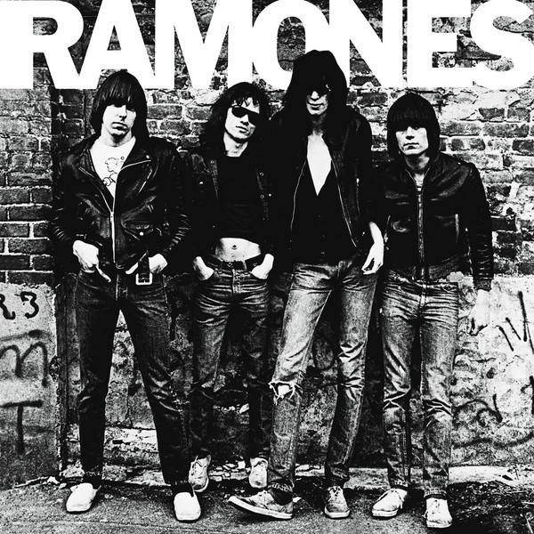

Información
The Police fue una banda de rock inglesa formada en Londres en 1977. Durante la mayor parte de su historia, la formación consistió en el compositor principal Sting (voz principal, bajo), Andy Summers (guitarra) y Stewart Copeland (batería, percusión ). ). The Police se hizo mundialmente popular a fines de la década de 1970 y principios de la de 1980. Emergiendo en la escena new wave británica, tocaron un estilo de rock influenciado por el punk , el reggae y el jazz.
Integrantes
Sting: Compositor-Bajisto
Henry Padovani: Guitarrista
Stewart Copeland: Baterista
Andy Summers: Guitarrista
Canciones
 |
||||
|  |
 |